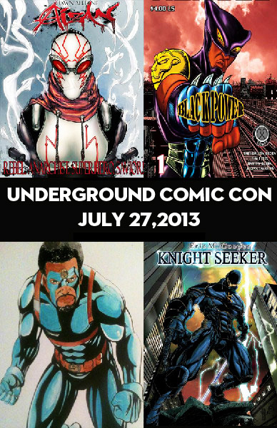
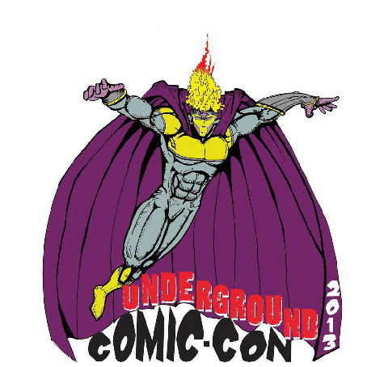
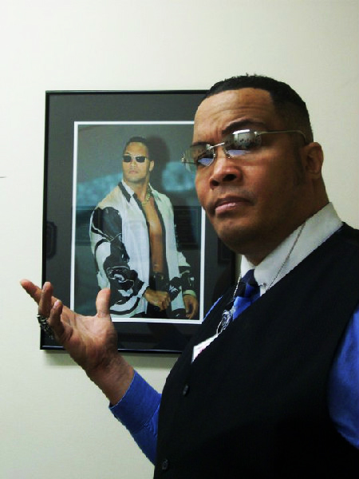
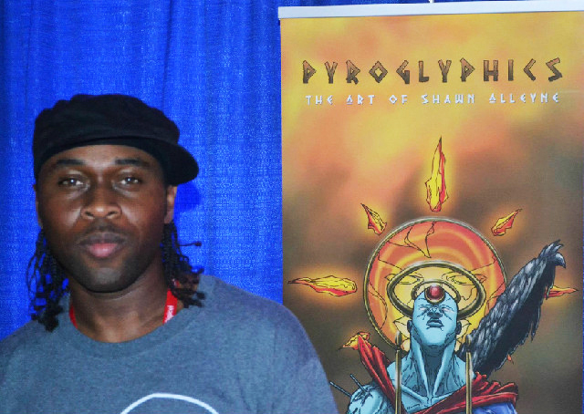
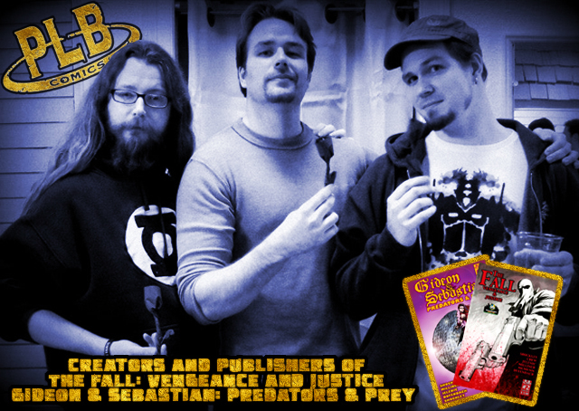
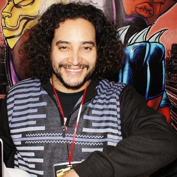
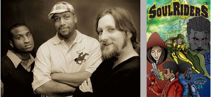
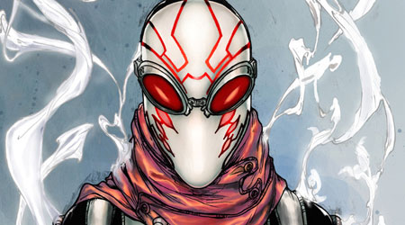
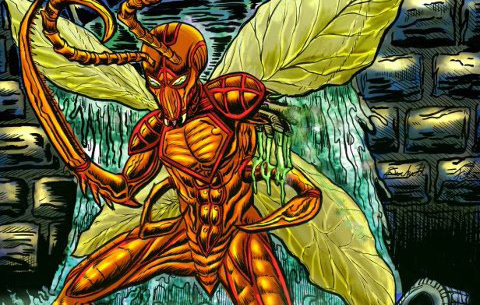
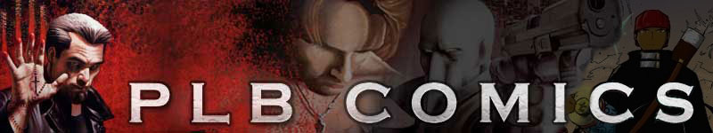

On Saturday July 27th 2013 Underground Comic Con will feature the best in independently produced art, writing and of course comics. In addition to enjoying incredible art, meeting creators and the opportunity to experience something new in the comics scene, attendees will also be able to meet special media guests such as Clayton Prince, Eric 'The Smoke' Moran with more to be announced. The Underground Comic Con is an event you can feel good about. Not only is it supporting independent arts, but a portion of the proceeds will also go directly to the Boys and Girls club.
     Eric M. Cooper of Knight Seeker (Co-Founder of Underground Comic Con) View his Website
Jabaar L. Brown of Underground Comixxx (Founder of Underground Comic Con) Link
Shawn Alleyne of Pyroglyphics Studios (Guest Artist) Link
Ray Felix of Bronx Heroes Comic Con (Guest Artist) Link
Comic Book Group PLB Link
669 South Union Street Wilmington, DE 19805
Saturday, July 27th.... 10AM - 6PM
Event Coordinators: Founder Jabaar L. Brown of Underground Comixxx.
Co-Founder Eric Cooper of Seeker Entertainment (Knight Seeker)
Administrator: Alison Boettcher
*Special Thanks to Keenon Mann, Education Coordinator of the Clarence Fraim Boys & Girls. Club
FOR ARTISTS and DEALER APPLICATION email us
mksubzero1701@hotmail.com